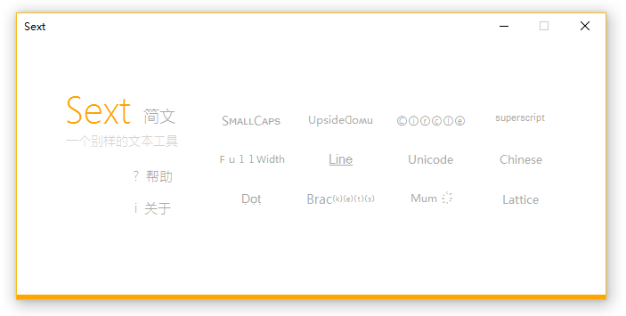
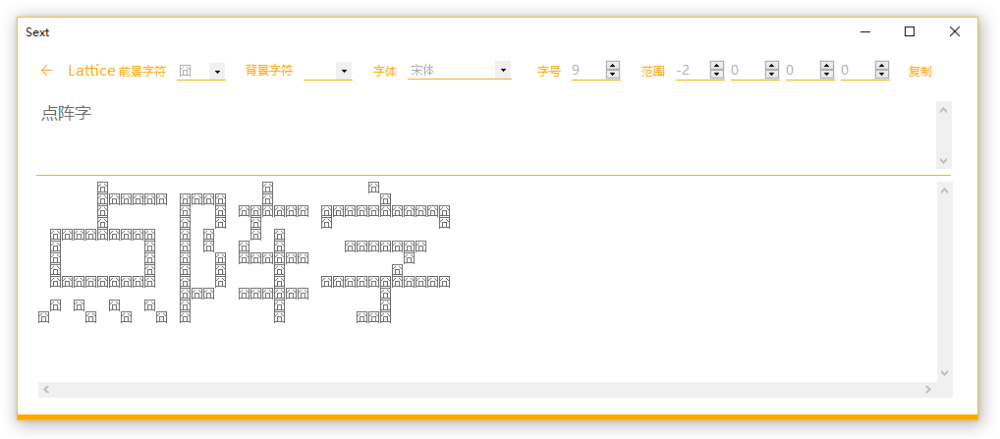

功能
这个程序能将文本转换为小型大写字母、颠倒、气泡、上标、全角、加线、加点、括号、简繁转换、菊花文、点阵字，以及Unicode编码、解码，如此多的功能，浓缩在仅有80KB的大小中，界面简约而自然。（需.NetFramework3.5及以上，Win7及以上自带）
转换后的内容里有特殊字符，所以可能会显示成一个个框。
随便举几个栗子：
¡pןɹoM oןןǝH
H̲e̲l̲l̲o̲ ̲W̲o̲r̲l̲d̲!̲
H̥e̥l̥l̥o̥ W̥o̥r̥l̥d̥!
是不是屌炸天了？哎，下面还有更屌的：
囧 囧 囧
囧囧囧囧囧囧 囧囧囧囧 囧 囧
囧 囧 囧 囧囧囧囧囧囧 囧囧囧囧囧囧囧囧囧囧囧
囧 囧 囧 囧 囧 囧
囧囧囧囧囧囧囧囧囧 囧 囧 囧 囧
囧 囧 囧 囧 囧 囧 囧囧囧囧囧囧囧
囧 囧 囧 囧 囧囧囧囧囧囧 囧
囧 囧 囧 囧 囧 囧
囧囧囧囧囧囧囧囧囧 囧 囧 囧 囧囧囧囧囧囧囧囧囧囧囧
囧囧囧 囧囧囧囧囧囧 囧
囧 囧 囧 囧 囧 囧 囧
囧 囧 囧 囧 囧 囧 囧囧囧
这在Sext中是Lattice，有很多参数可以设置（这货占了Sext大小的六分之一），直接上个图吧：
离线也能转换哦！你可以自己设置各个参数，并可以选择电脑上安装的任意字体进行转换，但要注意的是，除宋体以外的其它字体在小字号情况下可能会有残缺。
当然Sext也有一些无法转换的字母，比如UpsideDown中的B G K R Y这几个字母，SuperScript的q等，除此以外有任何Bug，欢迎在评论区反馈。